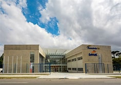

O que você não sabe sobre Senac
O Senac foi criado em 10 de janeiro de 1946 pela Confederação Nacional do Comércio de Bens, Serviços e Turismo (CNC), por meio do decreto-lei 8.621. A partir do ano seguinte, o Senac passou a desenvolver um trabalho até então inovador no país:oferecer, em larga escala, educação profissional destinada à formação e preparação de trabalhadores para o comércio. Na mesma data de sua criação, também foi promulgado o decreto-lei 8.622, que dispõe sobre a atuação da Instituição na aprendizagem comercial. Até hoje, a aprendizagem é uma das principais ações do Senac. Sempre à frente em assuntos educacionais, o Senac promoveu, ainda na década de 1940, o ensino a distância, mais notadamente com os cursos da Universidade do Ar. Entre as inovações promovidas pelo Senac na educação profissional, também se destacam as empresas pedagógicas (ou empresas-escola), principalmente a partir da década de 1960. O trunfo dessas empresas é a possibilidade de os alunos vivenciarem o trabalho em ambiente próprio. Ainda hoje, essas empresas são destaques da ação do Senac, como os hotéis-escola e os restaurantes-escola. Também datam da década de 1940 as primeiras ações de levar a educação profissional aos locais mais distantes dos grandes centros e que não dispunham de estabelecimentos do Senac. Por meio de cursos volantes e, posteriormente, de unidades móveis, o Senac se tornou um pioneiro naeducação sobre rodas. Na década de 1990, a informação e a produção de novos conhecimentos ganharam destaque na agenda das ações do Senac. A Instituição passou a produzir livros, vídeos esoftwares, voltados para as áreas de atuação do Senac. Nesse período, também foi criada a TV Senac (posteriormente Rede Sesc-Senac de Televisão e, hoje, Sesc TV), com uma programação voltada para assuntos de cultura e lazer. Aliando a tecnologia à disseminação de conhecimento, no início dos anos 2000, surgia a Rede Sesc-Senac de Teleconferência, promovendo debates sobre assuntos relevantes entre especialistas e o público, em tempo real, por e-mail, fax e telefone. Hoje, a Rede está presente em todos os estados, com cerca de 400 salas e auditórios equipados com infraestrutura de ponta.Outro uso da mídia foi a criação do programa radiofônico Espaço Senac, que, desde 2002, foi ampliado para o programa Sintonia Sesc-Senac, transmitido, hoje, por cerca de mil emissoras no Brasil. O ensino a distância também recebeu impulso na década de 1990, com a criação de um centro nacional específico, com o objetivo de ampliar e diversificar a programação do Senac nesse tipo de ensino. Como resultado desse empenho em EAD, o Ministério da Educação, em 2004, concedeu um credenciamento especial para o Senac oferecer cursos de pós-graduação lato sensu a distância. Para atender à demanda, foi criada a Rede EAD Senac. Em apenas seis décadas de trabalho, o Senac fez muito, como comprova o número de mais de 53 milhões de atendimentos. A história do Senac e dos milhões de brasileiros que vêm conquistando uma vida melhor por meio dos cursos e atividades da Instituição ainda continua a ser escrita. E sempre com a perspectiva de um final feliz.
